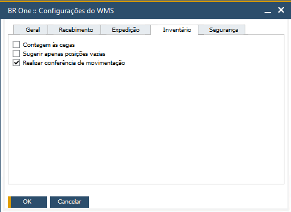

Conferência de movimentação
Quando o parâmetro Realizar conferência de movimentação estiver ativo, todas as transferências de estoque realizadas pelo menu Inventário > Transferir de estoque > Nova Transferência serão exibidas no menu Conferência de movimentação.
Essa transferência, primeiramente será alocada para um deposito em transito que pode ser configurado em:
Base multifilial habilitada: o cadastro do depósito em Transito é feito no SAP em Administração > Definição > Finanças > Filiais > Campo “Depósito em trânsito - WMS”.
Base multifilial desabilitada: o cadastro do depósito em Transito é feito no SAP em Administração > Definição > BR One WMS > Configurações do WMS.
imagem da base multifilial desabilitada
Essa transferência alocada no deposito em transito, será conferida no menu Conferência de movimentação. Assim que a mesma for conferida, será feita a transferência de estoque para o depósito destino.

Importante
Para que o deposito seja definido como um Depósito em transito - WMS, ele precisa cumprir alguns requisitos, sendo eles:
Se a base tem licença de BR One Produção, no cadastro do deposito, os campos Conta entrega e Conta saída devem estar preenchidos. E o campo Expedição direta deve estar desmarcado.
Se a base não tem a licença BR One Produção, no cadastro do deposito, o campo Expedição direta deve estar desmarcado.